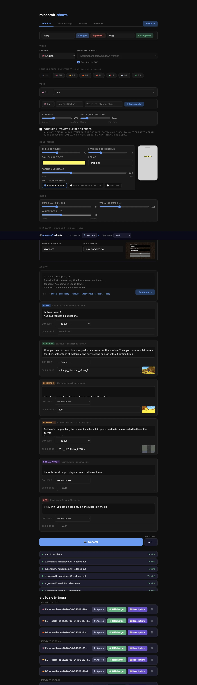

Salut, moi c’est Ambroise.J’ai passé cinq ansà essayer de comprendrepourquoi certaines idéesfont cliquer.Et pourquoi d’autres font acheter.
01 · HOMA GAMES
Tout a commencéà grande échelle.100 K$ de dépense paid par semaine.ROAS. LTV. Cohortes. Rétention.J’ai mangé de la data.
Chez Homa Games, j’ai piloté la stratégie d’acquisition payante d’un portefeuille de 6 jeux mobiles. Pour aller plus vite, j’ai commencé à produire mes propres créatives.
Par ici
Un dashboardn’a jamais écritun bon hook.Alors j’ai commencéà produire mes propres créas.
« Mais d’où tu sors une idée pareille ? »Édouard, mon collègue qui monte mes scripts
02 · NOKA MATCHA
Puis j’ai changéde terrain.Pas de feature à vendre.Mais une sensation.Goût. Couleur. Rituel.
Je suis parti du produit lui-même : sa texture, sa couleur, le rituel. De quoi arrêter le scroll et donner envie d’y goûter.
Comme en agence
METAGOOGLETIKTOKPINTERESTREPORTING CLIENT
TEXTURE
COULEUR
RITUEL
LE DILEMME
Faire regarder.
Et faire acheter.
Conversion
J’essaie de faire les deux.
03 · RIVRS
Ensuite, le problèmea changé d’échelle.Il fallait aller vite.Lancer de nouveaux marchés.Produire massivement,sans rogner sur la performance de chaque créa.10 jeux · 50+ créateurs.50+ vidéos / semaine.J’ai construit tout un système.
Briefs, priorités, feedback, localisation et itérations dans cinq langues, avec une équipe de sept personnes.
LE SYSTÈME DERRIÈRE LES IDÉES
J’ai ensuite renforcéla productivitéavec des outils d’automatisation.Moins de friction.Plus de tests.
Un outil interne pour transformer plus vite un script en variantes, voix, sous-titres et localisations.

30 MIN → 3 MIN
Aujourd’hui, je saislire un compte.Trouver l’angle.Écrire. Briefer. Produire.Tester. Trancher. Recommencer.Formé à la rigueur des chiffres.Et une intuition créativeassumée.
Creative strategy · Paid social · Production systems